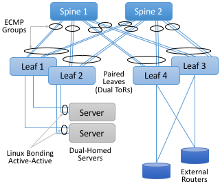
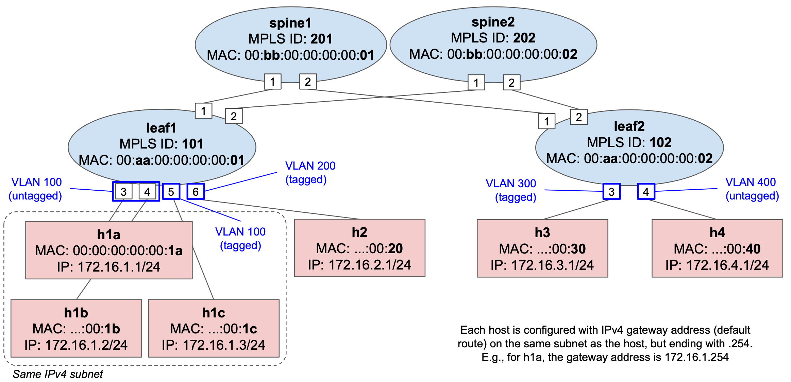

Exercise 7: Trellis Basics¶
The goal of this exercise is to learn how to set up and configure an emulated Trellis environment with a simple 2x2 topology.
Overview¶
Trellis is a set of built-in ONOS applications that provide the control plane for an IP fabric based on MPLS segment-routing. That is, similar in purpose to the app we have been developing in the previous exercise, but instead of using IPv6-based routing or SRv6, Trellis uses MPLS labels to forward packets between leaf switches and across the spines.
Trellis apps are deployed in Tier-1 carrier networks, and for this reason they are deemed production-grade. These apps provide an extensive feature set such as:
- Carrier-oriented networking capabilities: from basic L2 and L3 forwarding, to multicast, QinQ, pseudo-wires, integration with external control planes such as BGP, OSPF, DHCP relay, etc.
- Fault-tolerance and high-availability: as Trellis is designed to take full advantage of the ONOS distributed core, e.g., to withstand controller failures. It also provides dataplane-level resiliency against link failures and switch failures (with paired leaves and dual-homed hosts). See figure below.
- Single-pane-of-glass monitoring and troubleshooting, with dedicated tools such as T3.

Trellis is made of several apps running on top of ONOS, the main one is
segmentrouting, and its implementation can be found in the ONOS source tree:
onos/apps/segmentrouting (open on GitHub)
segmentrouting abstracts the leaf and spine switches to make the fabric appear
as “one big IP router”, such that operators can program them using APIs similar
to that of a traditional router (e.g. to configure VLANs, subnets, routes, etc.)
The app listens to operator-provided configuration, as well as topology events,
to program the switches with the necessary forwarding rules. Because of this
“one big IP router” abstraction, operators can independently scale the topology
to add more capacity or ports by adding more leaves and spines.
segmentrouting and other Trellis apps use the ONOS FlowObjective API, which
allow them to be pipeline-agnostic. As a matter of fact, Trellis was initially
designed to work with fixed-function switches exposing an OpenFlow agent (such
as Broadcom Tomahawk, Trident2, and Qumran via the OF-DPA pipeline). However, in
recent years, support for P4 programmable switches was enabled without changing
the Trellis apps, but instead providing a special ONOS pipeconf that brings in a
P4 program complemented by a set of drivers that among other things are
responsible for translating flow objectives to the P4 program-specific tables.
This P4 program is named fabric.p4. It’s implementation along with the
corresponding pipeconf drivers can be found in the ONOS source tree:
onos/pipelines/fabric (open on GitHub)
This pipeconf currently works on the stratum_bmv2 software switch as well as
on Intel Barefoot Tofino-based switches (the fabric-tofino project provides
instructions and scripts to create a Tofino-enabled pipeconf).
We will come back to the details of fabric.p4 in the next lab, for now, let’s
keep in mind that instead of building our own custom pipeconf, we will use one
provided with ONOS.
The goal of the exercise is to learn the Trellis basics by writing a configuration in the form of a netcfg JSON file to set up bridging and IPv4 routing of traffic between hosts.
For a gentle overview of Trellis, please check the online book “Software-Defined Networks: A Systems Approach”: https://sdn.systemsapproach.org/trellis.html
Finally, the official Trellis documentation is also available online: https://docs.trellisfabric.org/
Topology¶
We will use a topology similar to previous exercises, however, instead of IPv6
we will use IPv4 hosts. The topology file is located under
mininet/topo-v4.py. While the Trellis apps support IPv6, the P4
program does not, yet. Development of IPv6 support in fabric.p4 is work in
progress.

Exactly like in previous exercises, the Mininet script topo-v4.py used here defines 4 IPv4 subnets:
172.16.1.0/24with 3 hosts connected toleaf1(h1a,h1b, andh1c)172.16.2.0/24with 1 hosts connected toleaf1(h2)172.16.3.0/24with 1 hosts connected toleaf2(h3)172.16.4.0/24with 1 hosts connected toleaf2(h4)
VLAN tagged vs. untagged ports¶
As usually done in a traditional router, different subnets are associated to different VLANs. For this reason, Trellis allows configuring ports with different VLANs, either untagged or tagged.
An untagged port expects packets to be received and sent without a VLAN tag, but internally, the switch processes all packets as belonging to a given pre-configured VLAN ID. Similarly, when transmitting packets, the VLAN tag is removed.
For tagged ports, packets are expected to be received with a VLAN tag that has ID that belongs to a pre-configured set of known ones. Packets received untagged or with an unknown VLAN ID, are dropped.
In our topology, we want the following VLAN configuration:
leaf1port3and4: VLAN100untagged (hosth1aandh1b)leaf1port5: VLAN100tagged (h1c)leaf1port6: VLAN200tagged (h2)leaf2port3: VLAN300tagged (h3)leaf2port4: VLAN400untagged (h4)
In the Mininet script topo-v4.py, we use different host Python classes to create untagged and tagged hosts.
For example, for h1a attached to untagged port leaf1-3, we use the
IPv4Host class:
# Excerpt from mininet/topo-v4.py
h1a = self.addHost('h1a', cls=IPv4Host, mac="00:00:00:00:00:1A",
ip='172.16.1.1/24', gw='172.16.1.254')
For h2, which instead is attached to tagged port leaf1-6, we use the
TaggedIPv4Host class:
h2 = self.addHost('h2', cls=TaggedIPv4Host, mac="00:00:00:00:00:20",
ip='172.16.2.1/24', gw='172.16.2.254', vlan=200)
In the same Python file, you can find the implementation for both classes. For
TaggedIPv4Host we use standard Linux commands to create a VLAN tagged
interface.
Configuration via netcfg¶
The JSON file in mininet/netcfg-sr.json includes the necessary configuration for ONOS and the Trellis apps to program switches to forward traffic between hosts of the topology described above.
NOTE: this is a similar but different file then the one used in previous
exercises. Notice the -sr suffix, where sr stands for segmentrouting, as
this file contains the necessary configuration for such app to work.
Take a look at both the old file (netcfg.json) and the new one (netcfg-sr.json), can you spot the differences? To help, try answering the following questions:
- What is the pipeconf ID used for all 4 switches? Which pipeconf ID did we use before? Why is it different?
- In the new file, each device has a
"segmentrouting"config block (JSON subtree). Do you see any similarities with the previous file and the"fabricDeviceConfig"block? - How come all
"fabricDeviceConfig"blocks are gone in the new file? - Look at the
"interfaces"config blocks, what has changed w.r.t. the old file? - In the new file, why do the untagged interfaces have only one VLAN ID value, while the tagged ones can take many (JSON array)?
- Is the
interfacesblock provided for all host-facing ports? Which ports are missing and which hosts are attached to those ports?
Exercise steps¶
1. Restart ONOS and Mininet with the IPv4 topology¶
Since we want to use a new topology with IPv4 hosts, we need to reset the current environment:
$ make reset
This command will stop ONOS and Mininet and remove any state associated with them.
Re-start ONOS and Mininet, this time with the new IPv4 topology:
IMPORTANT: please notice the -v4 suffix!
$ make start-v4
Wait about 1 minute before proceeding with the next steps, this will give time to ONOS to start all of its subsystems.
2. Load fabric pipeconf and segmentrouting¶
Differently from previous exercises, instead of building and installing our own pipeconf and app, here we use built-in ones.
Open up the ONOS CLI (make onos-cli) and activate the following apps:
onos> app activate fabric
onos> app activate segmentrouting
NOTE: The full ID for both apps is org.onosproject.pipelines.fabric and
org.onosproject.segmentrouting, respectively. For convenience, when activating
built-in apps using the ONOS CLI, you can specify just the last piece of the
full ID (after the last dot.)
NOTE 2: The fabric app has the only purpose of registering pipeconfs in
the system. I.e., differently from segmentrouting, even if we call them both
apps, fabric does not interact with the network in any way.
Verify apps¶
Verify that all apps have been activated successfully:
onos> apps -s -a
* 18 org.onosproject.drivers 2.2.2 Default Drivers
* 37 org.onosproject.protocols.grpc 2.2.2 gRPC Protocol Subsystem
* 38 org.onosproject.protocols.gnmi 2.2.2 gNMI Protocol Subsystem
* 39 org.onosproject.generaldeviceprovider 2.2.2 General Device Provider
* 40 org.onosproject.protocols.gnoi 2.2.2 gNOI Protocol Subsystem
* 41 org.onosproject.drivers.gnoi 2.2.2 gNOI Drivers
* 42 org.onosproject.route-service 2.2.2 Route Service Server
* 43 org.onosproject.mcast 2.2.2 Multicast traffic control
* 44 org.onosproject.portloadbalancer 2.2.2 Port Load Balance Service
* 45 org.onosproject.segmentrouting 2.2.2 Segment Routing
* 53 org.onosproject.hostprovider 2.2.2 Host Location Provider
* 54 org.onosproject.lldpprovider 2.2.2 LLDP Link Provider
* 64 org.onosproject.protocols.p4runtime 2.2.2 P4Runtime Protocol Subsystem
* 65 org.onosproject.p4runtime 2.2.2 P4Runtime Provider
* 99 org.onosproject.drivers.gnmi 2.2.2 gNMI Drivers
* 100 org.onosproject.drivers.p4runtime 2.2.2 P4Runtime Drivers
* 101 org.onosproject.pipelines.basic 2.2.2 Basic Pipelines
* 102 org.onosproject.drivers.stratum 2.2.2 Stratum Drivers
* 103 org.onosproject.drivers.bmv2 2.2.2 BMv2 Drivers
* 111 org.onosproject.pipelines.fabric 2.2.2 Fabric Pipeline
* 164 org.onosproject.gui2 2.2.2 ONOS GUI2
Verify that you have the above 20 apps active in your ONOS instance. If you are
wondering why so many apps, remember from EXERCISE 3 that the ONOS container in
docker-compose.yml is configured to pass the environment variable ONOS_APPS
which defines built-in apps to load during startup.
In our case this variable has value:
ONOS_APPS=gui2,drivers.bmv2,lldpprovider,hostprovider
Moreover, segmentrouting requires other apps as dependencies, such as
route-service, mcast, and portloadbalancer. The combination of all these
apps (and others that we do not need in this exercise) is what makes Trellis.
Verify pipeconfs¶
Verify that the fabric pipeconfs have been registered successfully:
onos> pipeconfs
id=org.onosproject.pipelines.fabric-full, behaviors=[PortStatisticsDiscovery, PiPipelineInterpreter, Pipeliner, IntProgrammable], extensions=[P4_INFO_TEXT, BMV2_JSON, CPU_PORT_TXT]
id=org.onosproject.pipelines.int, behaviors=[PiPipelineInterpreter, Pipeliner, PortStatisticsDiscovery, IntProgrammable], extensions=[P4_INFO_TEXT, BMV2_JSON]
id=org.onosproject.pipelines.fabric-spgw-int, behaviors=[PortStatisticsDiscovery, PiPipelineInterpreter, Pipeliner, IntProgrammable], extensions=[P4_INFO_TEXT, BMV2_JSON, CPU_PORT_TXT]
id=org.onosproject.pipelines.fabric, behaviors=[PortStatisticsDiscovery, PiPipelineInterpreter, Pipeliner], extensions=[P4_INFO_TEXT, BMV2_JSON, CPU_PORT_TXT]
id=org.onosproject.pipelines.fabric-bng, behaviors=[PortStatisticsDiscovery, PiPipelineInterpreter, Pipeliner, BngProgrammable], extensions=[P4_INFO_TEXT, BMV2_JSON, CPU_PORT_TXT]
id=org.onosproject.pipelines.fabric-spgw, behaviors=[PortStatisticsDiscovery, PiPipelineInterpreter, Pipeliner], extensions=[P4_INFO_TEXT, BMV2_JSON, CPU_PORT_TXT]
id=org.onosproject.pipelines.fabric-int, behaviors=[PortStatisticsDiscovery, PiPipelineInterpreter, Pipeliner, IntProgrammable], extensions=[P4_INFO_TEXT, BMV2_JSON, CPU_PORT_TXT]
id=org.onosproject.pipelines.basic, behaviors=[PiPipelineInterpreter, Pipeliner, PortStatisticsDiscovery], extensions=[P4_INFO_TEXT, BMV2_JSON]
Wondering why so many pipeconfs? fabric.p4 comes in different “profiles”, used
to enable different dataplane features in the pipeline. We’ll come back
to the differences between different profiles in the next exercise, for now
let’s make sure the basic one org.onosproject.pipelines.fabric is loaded.
This is the one we need to program all 4 switches, as specified in
netcfg-sr.json.
Increase reconciliation frequency (optional, but recommended)¶
Run the following commands in the ONOS CLI:
onos> cfg set org.onosproject.net.flow.impl.FlowRuleManager fallbackFlowPollFrequency 4
onos> cfg set org.onosproject.net.group.impl.GroupManager fallbackGroupPollFrequency 3
This command tells the ONOS core to modify the period (in seconds) between reconciliation checks. Reconciliation is used to verify that switches have the expected forwarding state and to correct any inconsistencies, i.e., writing any pending flow rule and group. When running ONOS and the emulated switches in the same machine (especially those with low CPU/memory), it might happen that P4Runtime write requests time out because the system is overloaded.
The default reconciliation period is 30 seconds, the above commands set it to 4 seconds for flow rules, and 3 seconds for groups.
3. Push netcfg-sr.json to ONOS¶
On a terminal window, type:
IMPORTANT: please notice the -sr suffix!
$ make netcfg-sr
As we learned in EXERCISE 3, this command will push netcfg-sr.json to ONOS,
triggering discovery and configuration of the 4 switches. Moreover, since the
file specifies a segmentrouting config block for each switch, this will
instruct the segmentrouting app in ONOS to take control of all of them, i.e.,
the app will start generating flow objectives that will be translated into flow
rules for the fabric.p4 pipeline.
Check the ONOS log (make onos-log). You should see numerous messages from
components such as TopologyHandler, LinkHandler, SegmentRoutingManager,
etc., signaling that switches have been discovered and programmed.
You should also see warning messages such as:
[ForwardingObjectiveTranslator] Cannot translate DefaultForwardingObjective: unsupported forwarding function type 'PSEUDO_WIRE'...
This is normal, as not all Trellis features are supported in fabric.p4. One of
such feature is pseudo-wire (L2 tunneling across the L3 fabric). You can
ignore that.
This error is generated by the Pipeliner driver behavior of the fabric
pipeconf, which recognizes that the given flow objective cannot be translated.
Check configuration in ONOS¶
Verify that all interfaces have been configured successfully:
onos> interfaces
leaf1-3: port=device:leaf1/3 ips=[172.16.1.254/24] mac=00:AA:00:00:00:01 vlanUntagged=100
leaf1-4: port=device:leaf1/4 ips=[172.16.1.254/24] mac=00:AA:00:00:00:01 vlanUntagged=100
leaf1-5: port=device:leaf1/5 ips=[172.16.1.254/24] mac=00:AA:00:00:00:01 vlanTagged=[100]
leaf1-6: port=device:leaf1/6 ips=[172.16.2.254/24] mac=00:AA:00:00:00:01 vlanTagged=[200]
You should see 4 interfaces in total (for all host-facing ports of leaf1),
configured as in the netcfg-sr.json file. You will have to add the
configuration for leaf2’s ports later in this exercise.
A similar output can be obtained by using a segmentrouting-specific command:
onos> sr-device-subnets
device:leaf1
172.16.1.0/24
172.16.2.0/24
device:spine1
device:spine2
device:leaf2
This command lists all device-subnet mapping known to segmentrouting. For a
list of other available sr-specific commands, type sr- and press
tab (as for command auto-completion).
Another interesting command is sr-ecmp-spg, to list all computed ECMP
shortest-path graphs:
onos> sr-ecmp-spg
Root Device: device:leaf1 ECMP Paths:
Paths from device:leaf1 to device:spine1
== : device:leaf1/1 -> device:spine1/1
Paths from device:leaf1 to device:spine2
== : device:leaf1/2 -> device:spine2/1
Paths from device:leaf1 to device:leaf2
== : device:leaf1/2 -> device:spine2/1 : device:spine2/2 -> device:leaf2/2
== : device:leaf1/1 -> device:spine1/1 : device:spine1/2 -> device:leaf2/1
Root Device: device:spine1 ECMP Paths:
Paths from device:spine1 to device:leaf1
== : device:spine1/1 -> device:leaf1/1
Paths from device:spine1 to device:spine2
== : device:spine1/2 -> device:leaf2/1 : device:leaf2/2 -> device:spine2/2
== : device:spine1/1 -> device:leaf1/1 : device:leaf1/2 -> device:spine2/1
Paths from device:spine1 to device:leaf2
== : device:spine1/2 -> device:leaf2/1
Root Device: device:spine2 ECMP Paths:
Paths from device:spine2 to device:leaf1
== : device:spine2/1 -> device:leaf1/2
Paths from device:spine2 to device:spine1
== : device:spine2/1 -> device:leaf1/2 : device:leaf1/1 -> device:spine1/1
== : device:spine2/2 -> device:leaf2/2 : device:leaf2/1 -> device:spine1/2
Paths from device:spine2 to device:leaf2
== : device:spine2/2 -> device:leaf2/2
Root Device: device:leaf2 ECMP Paths:
Paths from device:leaf2 to device:leaf1
== : device:leaf2/1 -> device:spine1/2 : device:spine1/1 -> device:leaf1/1
== : device:leaf2/2 -> device:spine2/2 : device:spine2/1 -> device:leaf1/2
Paths from device:leaf2 to device:spine1
== : device:leaf2/1 -> device:spine1/2
Paths from device:leaf2 to device:spine2
== : device:leaf2/2 -> device:spine2/2
These graphs are used by segmentrouting to program flow rules and groups
(action selectors) in fabric.p4, needed to load balance traffic across
multiple spines/paths.
Verify that no hosts have been discovered so far:
onos> hosts
You should get an empty output.
Verify that all initial flows and groups have be programmed successfully:
onos> flows -c added
deviceId=device:leaf1, flowRuleCount=52
deviceId=device:spine1, flowRuleCount=28
deviceId=device:spine2, flowRuleCount=28
deviceId=device:leaf2, flowRuleCount=36
onos> groups -c added
deviceId=device:leaf1, groupCount=5
deviceId=device:leaf2, groupCount=3
deviceId=device:spine1, groupCount=5
deviceId=device:spine2, groupCount=5
You should see the same flowRuleCount and groupCount in your output. To dump
the whole flow rules and groups, remove the -c argument from the command.
added is used to filter only entities that are known to have been written
to the switch (i.e., the P4Runtime Write RPC was successful.)
4. Connectivity test¶
Same-subnet hosts (bridging)¶
Open up the Mininet CLI (make mn-cli), let’s start by pinging h1a and h1c,
which are both on the same subnet (VLAN 100 172.16.1.0/24):
mininet> h1a ping h1c
PING 172.16.1.3 (172.16.1.3) 56(84) bytes of data.
64 bytes from 172.16.1.3: icmp_seq=1 ttl=63 time=13.7 ms
64 bytes from 172.16.1.3: icmp_seq=2 ttl=63 time=3.63 ms
64 bytes from 172.16.1.3: icmp_seq=3 ttl=63 time=3.52 ms
...
Ping should work. Check the ONOS log, you should see an output similar to that of exercises 4-5.
[HostHandler] Host 00:00:00:00:00:1A/None is added at [device:leaf1/3]
[HostHandler] Populating bridging entry for host 00:00:00:00:00:1A/None at device:leaf1:3
[HostHandler] Populating routing rule for 172.16.1.1 at device:leaf1/3
[HostHandler] Host 00:00:00:00:00:1C/100 is added at [device:leaf1/5]
[HostHandler] Populating bridging entry for host 00:00:00:00:00:1C/100 at device:leaf1:5
[HostHandler] Populating routing rule for 172.16.1.3 at device:leaf1/5
That’s because segmentrouting operates in a way that is similar to the custom
app of previous exercises. Hosts are discovered by the built-in service
hostprovider intercepting packets such as ARP or NDP. For hosts in the same
subnet, to support ARP resolution, multicast (ALL) groups are used to replicate
ARP requests to all ports belonging to the same VLAN. segmentrouting listens
for host events, when a new one is discovered, it installs the necessary
bridging and routing rules.
Hosts on different subnets (routing)¶
On the Mininet prompt, start a ping to h2 from any host in the subnet with
VLAN 100, for example, from h1a:
mininet> h1a ping h2
The ping should NOT work, and the reason is that the location of h2 is not
known to ONOS, yet. Usually, Trellis is used in networks where hosts use DHCP
for addressing. In such setup, we could use the DHCP relay app in ONOS to learn
host locations and addresses when the hosts request an IP address via DHCP.
However, in this simpler topology, we need to manually trigger h2 to generate
some packets to be discovered by ONOS.
When using segmentrouting, the easiest way to have ONOS discover an host, is
to ping the gateway address that we configured in netcfg-sr.json, or that you
can derive from the ONOS CLI (onos> interfaces):
mininet> h2 ping 172.16.2.254
PING 172.16.2.254 (172.16.2.254) 56(84) bytes of data.
64 bytes from 172.16.2.254: icmp_seq=1 ttl=64 time=28.9 ms
64 bytes from 172.16.2.254: icmp_seq=2 ttl=64 time=12.6 ms
64 bytes from 172.16.2.254: icmp_seq=3 ttl=64 time=15.2 ms
...
Ping is working, and ONOS should have discovered h2 by now. But, who is
replying to our pings?
If you check the ARP table for h2:
mininet> h2 arp
Address HWtype HWaddress Flags Mask Iface
172.16.2.254 ether 00:aa:00:00:00:01 C h2-eth0.200
You should recognize MAC address 00:aa:00:00:00:01 as the one associated with
leaf1 in netcfg-sr.json. That’s it, the segmentrouting app in ONOS is
replying to our ICMP echo request (ping) packets! Ping requests are intercepted
by means of P4Runtime packet-in, while replies are generated and injected via
P4Runtime packet-out. This is equivalent to pinging the interface of a
traditional router.
At this point, ping from h1a to h2 should work:
mininet> h1a ping h2
PING 172.16.2.1 (172.16.2.1) 56(84) bytes of data.
64 bytes from 172.16.2.1: icmp_seq=1 ttl=63 time=6.23 ms
64 bytes from 172.16.2.1: icmp_seq=2 ttl=63 time=3.81 ms
64 bytes from 172.16.2.1: icmp_seq=3 ttl=63 time=3.84 ms
...
Moreover, you can check that all hosts pinged so far have been discovered by ONOS:
onos> hosts -s
id=00:00:00:00:00:1A/None, mac=00:00:00:00:00:1A, locations=[device:leaf1/3], vlan=None, ip(s)=[172.16.1.1]
id=00:00:00:00:00:1C/100, mac=00:00:00:00:00:1C, locations=[device:leaf1/5], vlan=100, ip(s)=[172.16.1.3]
id=00:00:00:00:00:20/200, mac=00:00:00:00:00:20, locations=[device:leaf1/6], vlan=200, ip(s)=[172.16.2.1]
5. Dump packets to see VLAN tags (optional)¶
TODO: detailed instructions for this step are still work in progress.
If you feel adventurous, start a ping between any two hosts, and use the tool util/mn-pcap to dump packets to a PCAP file. After dumping packets, the tool tries to open the pcap file on wireshark (if installed).
For example, to dump packets out of the h2 main interface:
$ util/mn-pcap h2
6. Add missing interface config¶
Let’s start a ping from h3 to any other host, for example h2:
mininet> h3 ping h2
...
It should NOT work. Can you tell why?
Let’s check the ONOS log (make onos-log), you should see the following
messages:
...
INFO [HostHandler] Host 00:00:00:00:00:30/None is added at [device:leaf2/3]
INFO [HostHandler] Populating bridging entry for host 00:00:00:00:00:30/None at device:leaf2:3
WARN [RoutingRulePopulator] Untagged host 00:00:00:00:00:30/None is not allowed on device:leaf2/3 without untagged or nativevlan config
WARN [RoutingRulePopulator] Fail to build fwd obj for host 00:00:00:00:00:30/None. Abort.
INFO [HostHandler] 172.16.3.1 is not included in the subnet config of device:leaf2/3. Ignored.
h3 is discovered because ONOS intercepted the ARP request to resolve h3’s
gateway IP address (172.16.3.254), but the rest of the programming fails
because we have not provided a valid Trellis configuration for the switch port
facing h3 (leaf2/3). Indeed, if you look at netcfg-sr.json you will notice
that the "ports" section includes a config block for all leaf1 host-facing
ports, but it does NOT provide any for leaf2.
As a matter of fact, if you try to start a ping from h4 (attached to leaf2),
that should NOT work as well.
It is your task to modify the netcfg-sr.json to add the necessary config
blocks to enable connectivity for h3 and h4:
- Open up netcfg-sr.json.
- Look for the
"ports"section. - Provide a config for ports
device:leaf2/3anddevice:leaf2/4. When doing so, look at the config for other ports as a reference, but make sure to provide the right IPv4 gateway address, subnet, and VLAN configuration described at the beginning of this document. - When done, push the updated file to ONOS using
make netcfg-sr. - Verify that the two new interface configs show up when using the ONOS
CLI (
onos> interfaces). - If you don’t see the new interfaces in the ONOS CLI, verify the ONOS log
(
make onos-log) for any possible error, and eventually go back to step 3. - If you struggle to make it work, a solution is available in the
solution/mininetdirectory.
Let’s try to ping the corresponding gateway address from h3 and h4:
mininet> h3 ping 172.16.3.254
PING 172.16.3.254 (172.16.3.254) 56(84) bytes of data.
64 bytes from 172.16.3.254: icmp_seq=1 ttl=64 time=66.5 ms
64 bytes from 172.16.3.254: icmp_seq=2 ttl=64 time=19.1 ms
64 bytes from 172.16.3.254: icmp_seq=3 ttl=64 time=27.5 ms
...
mininet> h4 ping 172.16.4.254
PING 172.16.4.254 (172.16.4.254) 56(84) bytes of data.
64 bytes from 172.16.4.254: icmp_seq=1 ttl=64 time=45.2 ms
64 bytes from 172.16.4.254: icmp_seq=2 ttl=64 time=12.7 ms
64 bytes from 172.16.4.254: icmp_seq=3 ttl=64 time=22.0 ms
...
At this point, ping between all hosts should work. You can try that using the
special pingall command in the Mininet CLI:
mininet> pingall
*** Ping: testing ping reachability
h1a -> h1b h1c h2 h3 h4
h1b -> h1a h1c h2 h3 h4
h1c -> h1a h1b h2 h3 h4
h2 -> h1a h1b h1c h3 h4
h3 -> h1a h1b h1c h2 h4
h4 -> h1a h1b h1c h2 h3
*** Results: 0% dropped (30/30 received)
Congratulations!¶
You have completed the seventh exercise! You were able to use ONOS built-in
Trellis apps such as segmentrouting and the fabric pipeconf to configure
forwarding in a 2x2 leaf-spine fabric of IPv4 hosts.